data("iris")Literate programming with quarto
Introduction to Quarto
Literate programming
Literate programming is a programming paradigm introduced in 1984 by Donald Knuth in which a computer program is given as an explanation of how it works in a natural language, such as English, interspersed (embedded) with snippets of macros and traditional source code, from which compilable source code can be generated.

Literate programming mixes code with natural language.
Source: Wikipedia
Why use literate programming?
For yourself: a modern-day lab notebook : keep track of what you did, how you did it and why
For collaborating with other scientists: share results and the code that produced them
For a wider audience: communicate results clearly while ensuring reproducibility and easy updates
ex for the last point : a report that is updated after each measurment campain
Strongly encourage to do a quarto document for a paper, or your thesis
What is Quarto?
Quarto is an open-source tool for creating dynamic documents that combine code, results and text to produce reproducible outputs in multiple formats (reports, websites, slides…).
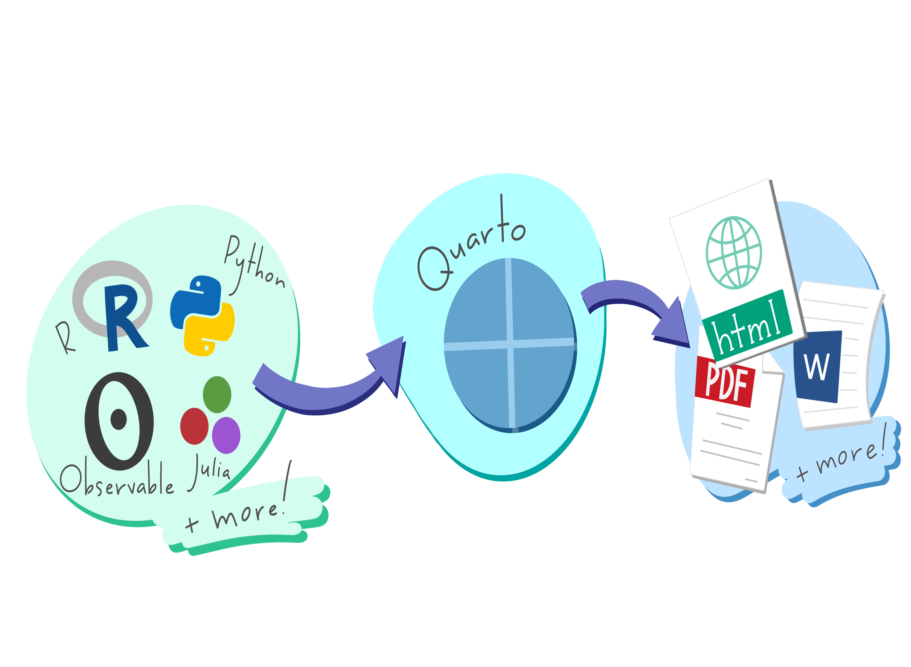
these slides, and the exercices are done with quarto
Getting started
Creating a new Quarto document
Quarto is pre-installed with RStudio.
To create a new document: File/New File/Quarto Document
You can choose between different types of document. Choose Document, fill in a title and a author name and click on Create
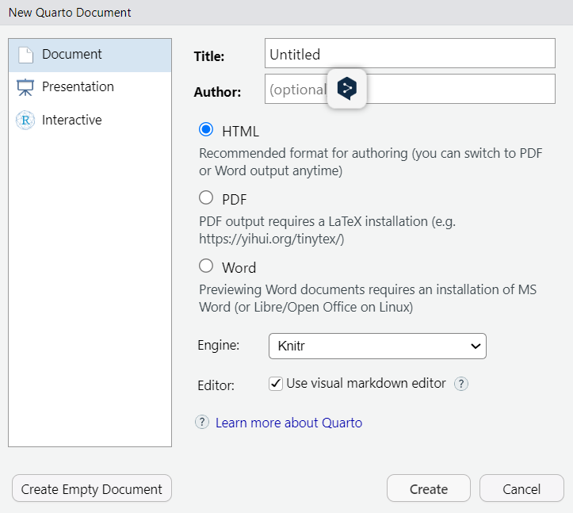
This open a document containing plain text and R code.
Rendering
- Click on and choose Preview in Viewer Pane
- Click on

When rendering, Quarto generates a new file that contains selected text, code, and results from the .qmd file. Note that you now have a .html file in the Files pane.
Rendering
You can view the rendered document in the Viewer pane:
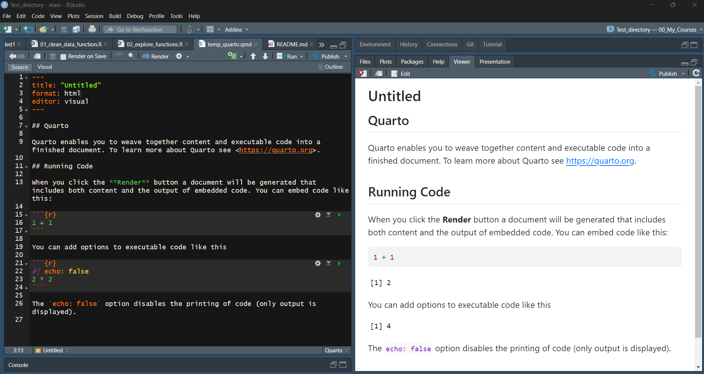
Visual editor
The Visual editor is an interface where you can use buttons to easily format text, insert images , tables..
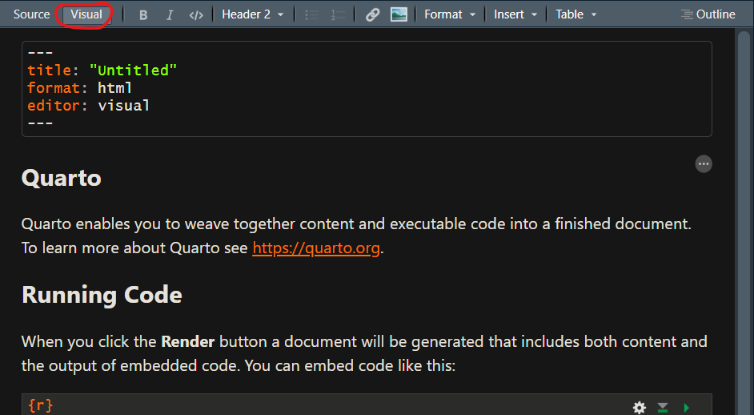
The Visual editor save the content of your document in Markdown format.
There are two ways of working on a document: from the visual editor, or from the source editor
try to add text, format it, play with it
Source editor
You can view and edit the plain Markdown document in the Source editor:
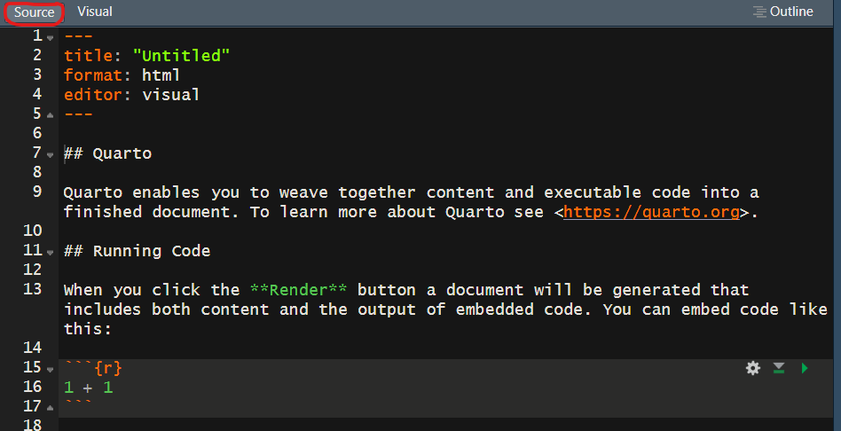
this is markdown langauge, we will talk about it in a few minutes
Content of a Quarto document
A YAML header: metadata and output settings
Text in Markdown format
Chunks of R code
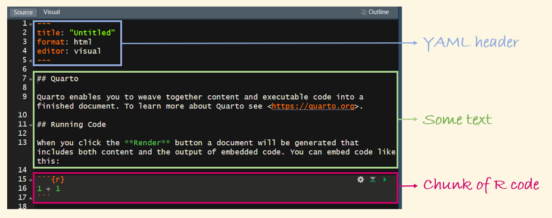
in the YAML title and author + output format
Write with markdown syntax
Markdown syntax
If you write text in the Visual editor, you can use the buttons and drop-down menu to format the text.
You can also write using the markdown syntax in the Source editor.
Markdown in a markup language used to format plain text in a simple and intuitive way.
A markup language is a way to annotate text to describe its structure and formatting, using special symbols or tags, so that computers can display it properly.
html is another markup languages
why would we use markdown?
easy when used to
exaclty as saved so easier to debug, easier with version control
But totally ok to use the Visual editor
Text formating
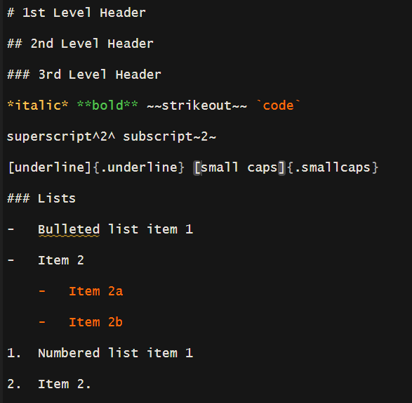
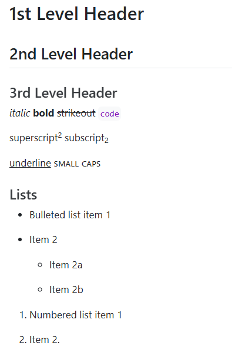
On the left, what you type
on the right, what you will see in the rendered document
Figures
To add a figure with a caption:
⚠️ The file with the figure needs to be in the same folder than the quarto document.
Formatting options:
Figure size
{width=300}
{height=80%}
Figure Alignment
{fig-align="left"}
{fig-align="center"}Combines option with a space between arguments:
{height=80% fig-align="right"}Tables
To add a table with markdown:
| First Header | Second Header |
|--------------|---------------|
| Content Cell | Content Cell |
| Content Cell | Content Cell || First Header | Second Header |
|---|---|
| Content Cell | Content Cell |
| Content Cell | Content Cell |
To add a caption and change the width of columns:
| First Header | Second Header |
|--------------|---------------|
| Content Cell | Content Cell |
| Content Cell | Content Cell |
: Caption {tbl-colwidths="[75,25]"}| First Header | Second Header |
|---|---|
| Content Cell | Content Cell |
| Content Cell | Content Cell |
This is however not very practical for big table, we will see alternative later
Equations
To write equations in Quarto, we have to use the LaTex syntax.
Equations can be place in a separate line, with$$…$$:
$$y \sim \mathcal N(\alpha + \sum_{i=1}^n\beta_n \times x_n, \sigma^2)$$\[y \sim \mathcal N(\alpha + \sum_{i=1}^n\beta_n \times x_n,\sigma^2)\]
They can also be displayed inline, with$…$:
This equation is displayed inline: $y = e^{\alpha}$This equation is displayed inline: \(y = e^{\alpha}\)
This is slighly more advanced but make the equation very clean
Links
To add a link:
<https://quarto.org/docs/get-started/hello/rstudio.html>https://quarto.org/docs/get-started/hello/rstudio.html
To add a named link:
[Quarto tutorial](https://quarto.org/docs/get-started/hello/rstudio.html)Cross-references
To be able to add a reference to a figure, table, equation, section… in another part of the document, we need to give them an identifier in{#….}:
{#fig-quarto}We can then refer to it with @:
@fig-quarto shows the logo of quarto.Figure 1 shows the logo of quarto.
Cross-references
Identifiers start with the type of item:
for a figure: fig-
for a table: tbl-
for an equation: eq-
for a section: sec-
Comptute with R
now that we have seen how to write, we are going to talk about code chunks
Insert R code
Chunks of R code are executed by Quarto when you render the document.
To add a chunk of R code:
click on and select R
or use the shortcut Ctrl + Alt + I
This inserts a code chunk where you can write R code:
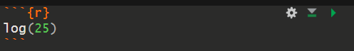
Code chunks are surrounded by```{r}….```.
You can use to run all previous chunks, and to run the current chunk.
💡Start your document with a chunk that loads the necessary packages.
💡Keep the chunks small.
Chunk labels
You can add a label to a chunk:
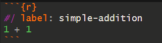
This helps you navigate to a specific chunk using the drop down navigator:
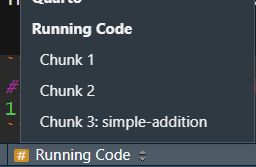
⚠️ Each chunk label must be unique.
Chunk options
Chunk options control how the code will be rendered. The most important are:
| Option | Run code | Show code | Show output | Show plots | Show messages | Show warnings |
|---|---|---|---|---|---|---|
| eval: false | 🚫 | ✅ | 🚫 | 🚫 | 🚫 | 🚫 |
| include: false | ✅ | 🚫 | 🚫 | 🚫 | 🚫 | 🚫 |
| echo: false | ✅ | 🚫 | ✅ | ✅ | ✅ | ✅ |
| results: hide | ✅ | ✅ | 🚫 | ✅ | ✅ | ✅ |
| fig-show: hide | ✅ | ✅ | ✅ | 🚫 | ✅ | ✅ |
| message: false | ✅ | ✅ | ✅ | ✅ | 🚫 | ✅ |
| warning: false | ✅ | ✅ | ✅ | ✅ | ✅ | 🚫 |
let’s not discuss them all…
Chunk options
Chunk options are added one by one within the chunk:
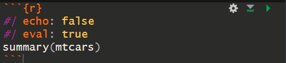
Some chunk options can also be selected using the button:
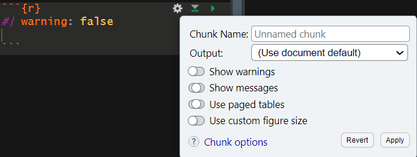
Inline code
Small R codes can be embedded directly in the text by surrounding them with `r… ` .
This is very useful to present your data or your results, as this will be updated if the data change:
.
The iris data have `r nrow(iris)` observations.
The mean sepal length is `r mean(iris$Sepal.Length)`.The iris data have 150 observations. The mean sepal length is 5.8433333.
Figures
Figures can be generated with a code chunk. Chunk options control the layout of the figure:
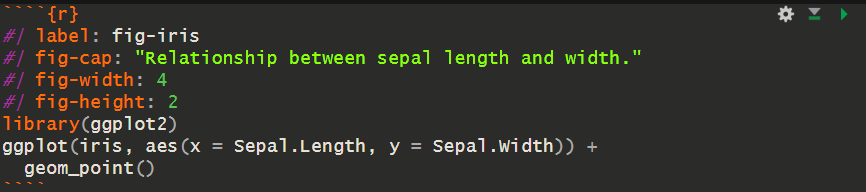
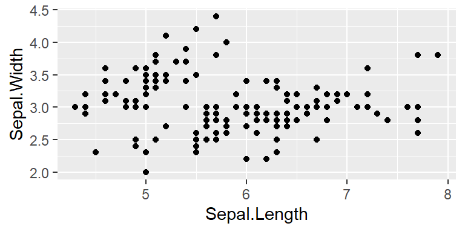
💡 Figures can then be cross-referenced using their label.
Figure options
fig-cap: add a captionfig-widthandfig-height: set figure size (in inches)fig-asp: control the aspect ratio (the width/height ratio)out-widthandout-height: control display size in output (in %)fig-align: figure alignment (“left”, “right”, “center”)layout-col: place multiple plots in the same rowfig-format: choose output format (“png”, “jpeg”, “svg”, “pdf”). The default depends on output format.
Tables
Tables can be generated with a code chunk:
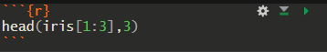
Sepal.Length Sepal.Width Petal.Length
1 5.1 3.5 1.4
2 4.9 3.0 1.4
3 4.7 3.2 1.3Tables with kable
The function knitr::kable propose a nicer layout, and additional formatting options (see the help of the function:)
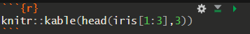
| Sepal.Length | Sepal.Width | Petal.Length |
|---|---|---|
| 5.1 | 3.5 | 1.4 |
| 4.9 | 3.0 | 1.4 |
| 4.7 | 3.2 | 1.3 |
The packages kableExtra and flextable proposes additional formating options.
Cross-references
The figures and table produced with a code chunk can be cross-referenced by their labels. For that, you need to add a label at the beginning of a code chunk:
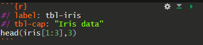
See @tb.iris Sepal.Length Sepal.Width Petal.Length
1 5.1 3.5 1.4
2 4.9 3.0 1.4
3 4.7 3.2 1.3See Table 1
what on the left gives what on the right
Caching
All code chunks are executed every time you render your document.
This ensures reproducibility, but can slow things down, especially when chunks take a long time to run. In this case, you can use caching for specific chunks.
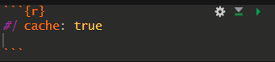
Caching saves the results of a chunk in a specific file in the document_name_cache folder (the name of the folder starts with the name of your document). On subsequent render, cached chunks are only re-run if their code has changed.
Caching
⚠️ Use caching with caution: if you change the data in a chunk, this chunk will be run, but the chunks using the data will NOT.
💡It is recommended to regularly clear the cache by deleting the cache folder manually.
YAML header
YAML header
The YAML header is surrounded by ---
It controls many settings for the entire document.
It is also recommended to write metadata in the YAML that will appear in the rendered document. This includes:
title: the title of the document
author: your name (and the names of your collaborators)
- date: either the creation date, or automatically show the last modification date with:
date: last-modifiedwe are not going to see all of them…
Global option
You can define the default options of all code chunks of a document in the YAML, under execute:
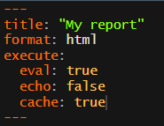
With this YAML, all code chunks will be executed but not shown in the output, and their results will be cached.
💡You can override these defaults for individual chunks using chunk-specific options.
Section numbers and table of content
You can use a table of contents (toc option) and/or section numbering (number-sections option) to make it easier for readers to navigate your document:
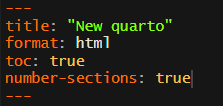
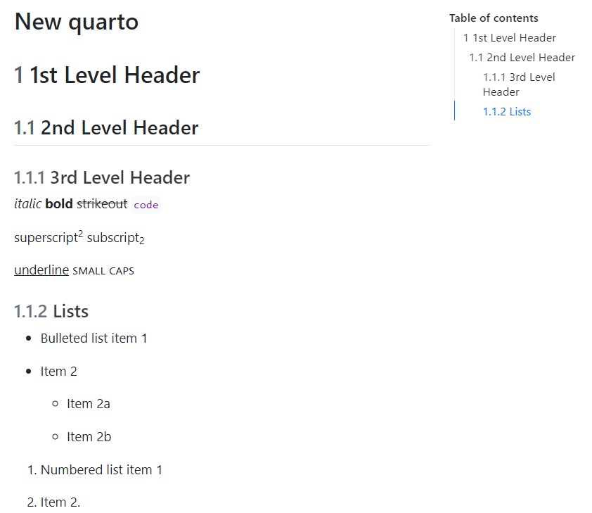
Self-contained documents
A HTML file created with quarto has several external dependencies that are placed in the document_name_files folder (for examples, figures created by code chunks).
If you want to share the html in an email or a USB drive, you will need to share the HTML file and the document_name_files folder.
To avoid this, you can created self-contained documents specifying the embed_resources option:
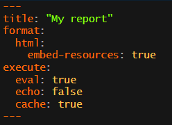
Parameters
You can specify parameters in the YAML, that will be used in the chunks.
For example, this is useful if you want to produce the same document for different subset of your data. Here, we can rapidly produce the same report for the different species of Iris.
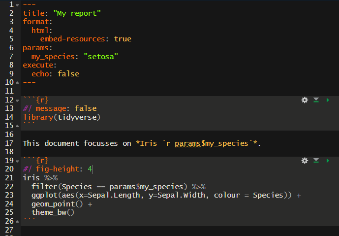
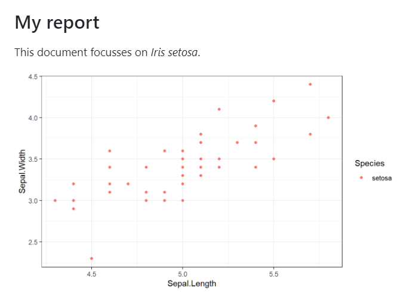
a bit more advanced
Bibliography
Citing references in the Visual editor
To add bibliographic references to a quarto document, you can use the Visual editor: Insert / Citation.
You can search an new reference with its DOI, or by searching bibliographic platforms (Crossref, PubMed…).
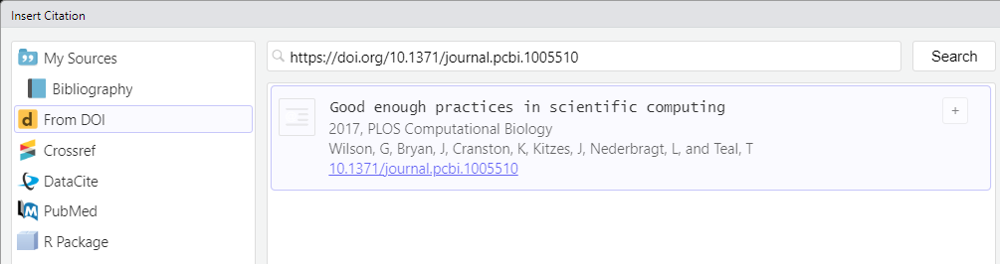
this is the easiest way
Citing references in the Visual editor
When inserting the first reference of a document, this will:
create a new .bib file in your project and add the reference to it. This file will be updated every time you add a new reference
add a bibliography field in the YAML, giving the name of the .bib file
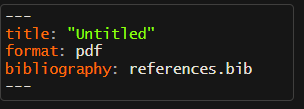
Citing references in the Visual editor
When you have an existing .bib file, you can also add a reference from this file, using the Visual editor: Insert / Citation
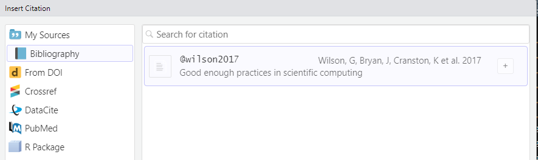
Citing references in the Source editor
To add a citation using the Source editor, you need to have an existing bibliography file (.bib file imported from a reference manager or created with the Visual editor).
You can add the reference using @ followed by the reference key (the reference identifier from the bibliography file).
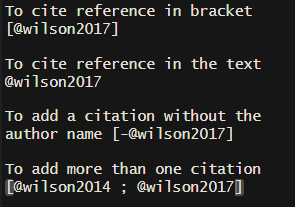
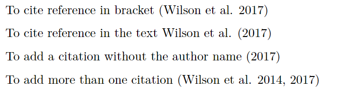
Rendered
When rendering your file, quarto will add a bibliography at the end of the document.
You will need to manually add a title for this section.
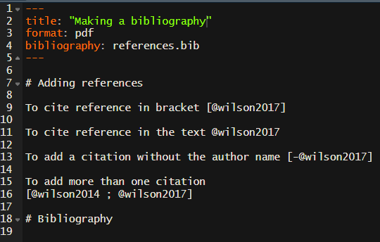
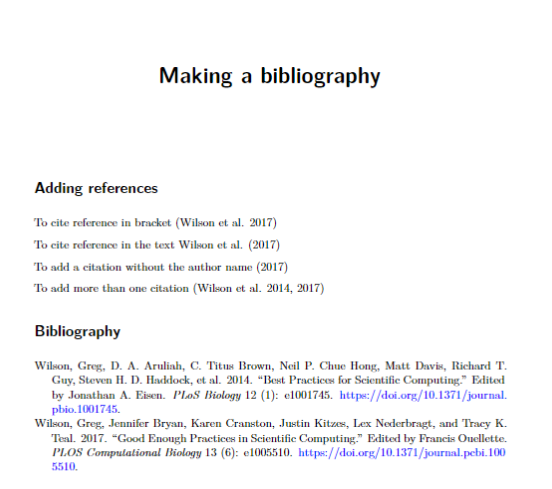
Bibliographic styles
To change the style of the citations and the bibliography, you can reference the CSL (citation style language) that you want to use in the csl field of the YAML:
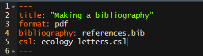
This file will need to be added in the same directory than your .qmd file (or you can specify an alternative path).
You can search for CSL styles here. They may as well be provided by scientific journals.
Quarto formats
so far we only have seen how to make html documents but
Quarto formats
Quarto supports many different formats, including:
More about Quarto formats here and here
We have seen how to do pdf,
Document formats
HTML (
html)PDF (
pdf): rendered with LaTex (requires a Latex installation such as TinyTex)OpenDocument Text (
odt)Microsoft Word (
docx)…
We have seen how to produce HTML documents, other documents can be produced in a similar way.
the pdf format is what is going to be asked for the assessment
Presentation formats
revealjs: HTML presentation with Reveal.js (these slides are generated with Reveal.js)pptx: Microsoft PowerPointbeamer: PDF presentation with LaTeX Beamer
Title slides start with # and all other slide starts with ##.
The title of this slide is written ## Presentation formats
Define quarto format
The format can be chosen when you create a new quarto document:
Or you can specify it into the YAML:
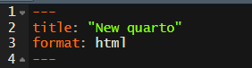
first solution, this is how we created an html document
Multiple formats and options
You can render to multiple output formats by specifying more than one format in the YAML. Different options can be specify for the different format:
For example, the following will add a table of content and number the sections in the html format, and keep the default options in pdf and docx.
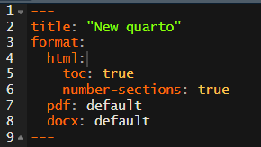
To select the format in which to render:
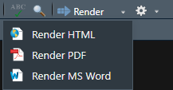
⚠️ Some options are available in all formats, but other are not (see here for the option available for each format)
Troubleshooting
to finish, let’s talk about common problems
When rendering fails
Check the Background Jobs tab:
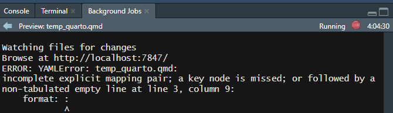
Sometimes (but not always) explicit error messages
here problem that there are two : in the YAML
When rendering fails
Common errors:
Missing R packages(packages non installed, or not loaded in the quarto document)
Problem with file paths and working directory: ⚠️ the default working directory of a Quarto document is the directory where the Quarto document is
Error of syntax in the YAML
Duplicated code chunks labels => check the drop-down chunk navigator
Errors due to the R code itself => run all code chunks in the console (Code/Run Region/Run all) or run chunks one by one to identify the problem
When rendering works but the document has problems
If you cannot see the outputs: check the chunk output options as some options prevent outputs from being displayed
If you get unexpected values/results: can this be a problem with the use f the cache?
To avoid big problems
💡 Render often, so that you can quickly identify the cause of the problem and solve it!
Acknowledgments
Wickham H., Cetinkaya-Rundel M., Grolemund G. R for Data Science - Chapter on Quarto in English and in Portuguese
Guilhaumon F. An introduction to Quarto here
Quarto Get started tutorial here
Quarto guide here
Ressources
Wickham H., Cetinkaya-Rundel M., Grolemund G. R for Data Science - Chapter on Quarto in English and in Portuguese
Guilhaumon F. An introduction to Quarto here
Quarto Get started tutorial here
Quarto guide here